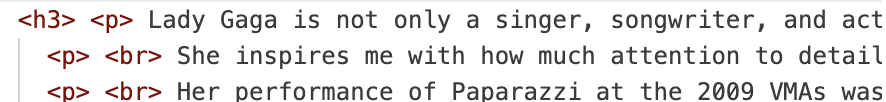
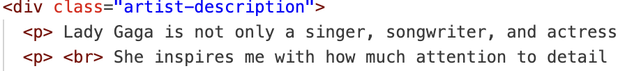
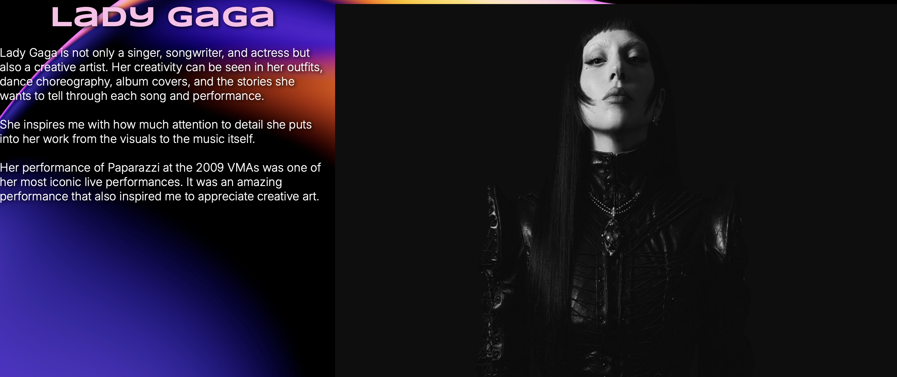
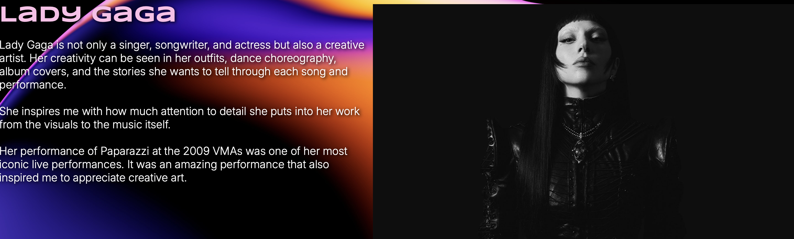
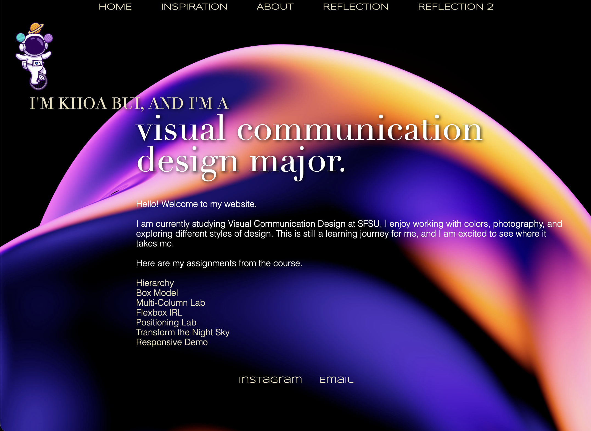

10/21/26 Before, I wanted to use "h3" to style all the paragraphs for my three artists at once instead of styling them separately. However, I realized that "h3" is meant for headings, not for containing paragraphs, so I fixed it by using a "div" and gave it the class "artist-description" so that I could style all of the text at once.


After reading the peer review, I decided to adjust my Inspiration page. The picture took up too much space compared to the text, so I adjusted the width to give them a better balance. Before, the picture looked too dominant because the text was much shorter, so I changed the picture section to 53%. The picture is still slightly bigger but does not overpower the text. I think these adjustments make the layout look more balanced and organized.


I made the text bigger on my About page, as my partner recommended. I also changed the title for each page, before it was template.
Based on my peer review, I also added my social links to the footer of my Home page. I added my Instagram and email so viewers can easily connect with me. I used Flexbox to organize the links and added some spacing between them to make the footer look clean and simple.
11/02/26 I applied hover effects to my navigation bar, and I really like how they turned out. Specifically, I used scale() so whenever I hover over a page on the navigation bar, the text becomes a little bigger. I applied this effect to the navigation bar on all of my pages.
On my Home page, I also added an astronaut image and made it move horizontally from left to right when I hover over it. I think it makes the page look more fun and interesting.
On my About page, I experimented with a negative value for the scale() effect. I used scale(-1) on the KHOA BUI hyperlink, but I didn’t understand why it flipped backward. However, I actually thought the effect looked pretty interesting, so I decided to keep it.
11/09/26 I really enjoyed working on this assignment because whenever I viewed my website on my iPhone or iPad, the layout always looked messy and different from how it appeared on my MacBook. I know the main focus of this assignment is not “Does this work on an iPhone?”, but it actually helped me solve some of the problems I had when viewing my website on different screen sizes.
I chose two breakpoints: 1200px and 600px. The 1200px breakpoint is mainly for tablets, such as the iPad mini, 11-inch iPad, and 13-inch iPad, while the 600px breakpoint is for smaller screens like the iPhone.
This is how my home page looks at screen widths between 601px and 1200px.

At this point, I made the navigation text smaller and the astronaut slightly larger. I also reduced the astronaut’s movement since the screen was getting smaller. Besides that, I adjusted the font sizes of my introduction text and made sure the text below was aligned with the text above.
And this is how my home page looks at 600px.
At 600px, I literally had to redesign the entire layout to make everything fit properly. Unlike the 1200px breakpoint, where I only needed to adjust a few things, the 600px breakpoint required a lot more changes. First, I changed the navigation bar from a horizontal layout to a vertical layout because there wasn’t enough space for all the links to fit in one row. I also had to adjust the font sizes, margins, and padding of my introduction text to make everything fit on the smaller screen.
Another thing I had to consider was the astronaut animation. Since the screen was much smaller, I needed to adjust its size and movement effect. I think the 600px breakpoint was the most challenging part of this assignment because I couldn’t just make everything smaller. I had to think about how to rearrange the elements while still keeping the overall design of my website.
11/12/26 I got feedback from Laurence about my footer, so I made some adjustments to it because my Instagram and email links were floating above the bottom of the page, which made the layout look a little unbalanced. To fix this, I used Flexbox by adding display: flex and flex-direction: column to the body to push the footer all the way to the bottom of the page.